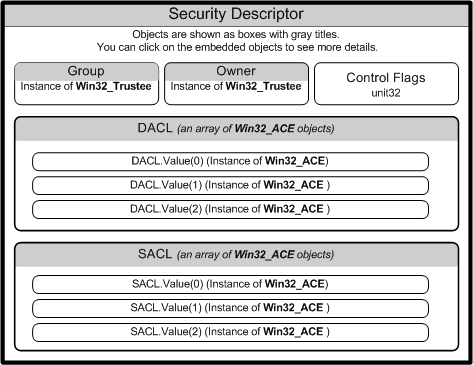
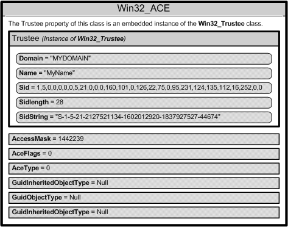

WMI has objects and methods that allow you to read and manipulate security descriptors to determine who has access to securable objects.
Security descriptors define the security attributes of securable objects such as files, registry keys, WMI namespaces, printers, services, or shares. A security descriptor contains information about the owner and primary group of an object. A provider can compare the resource security descriptor to the identity of a requesting user, and determine whether or not the user has the right to access the resource that a user is requesting. For more information, see Access to WMI Securable Objects.
Some WMI methods, such as GetSD, return a security descriptor in the binary byte array format. Starting with Windows Vista, use the methods of the Win32_SecurityDescriptorHelper class to convert a binary security descriptor to an instance of Win32_SecurityDescriptor, which can be manipulated more easily. For more information, see Changing Access Security on Securable Objects.
The following is a list of WMI security objects:
The following diagram shows the relationships among WMI security objects.

For more information about the role of access security, see Security Best Practices, Maintaining WMI Security, and Access Control.
The following table lists the Win32_SecurityDescriptor class properties.
| Property | Description |
|---|---|
| ControlFlags | Set of control bits that qualify the meaning of an SD or its individual members. For more information about setting the ControlFlags bit values, see Win32_SecurityDescriptor. |
| DACL | Discretionary Access Control List (ACL) of users and groups, and their access rights to a secured object. This property contains an array of Win32_ACE instances that represent Access Control Entries. For more information, see Creating a DACL. |
| Group | Group to which this secured object belongs. This property contains an instance of Win32_Trustee that contains the name, domain, and security identifier (SID) of the group to which the owner belongs. |
| Owner | Owner of this secured object. This property contains an instance of Win32_Trustee that contains the name, domain, and security identifier (SID) of the owner. |
| SACL | System Access Control List (ACL) contains an array of Win32_ACE instances that represent the type of access attempts that generate audit records for users or groups. For more information, see SACL for a New Object. |
The arrays of Win32_ACE objects in the discretionary access control list (DACL) and system access control list {SACL) create a link between a user or group and their access rights.
When a DACL property does not contain an access control entry (ACE), access rights are not granted and access to the object is denied.
[!Note]
A NULL DACL gives full access to everyone, which is a serious security risk. For more information, see Creating a DACL.
A Win32_ACE object contains an instance of the Win32_Trustee class that identifies a user or group, and an AccessMask property that is a bitmask, which specifies the actions that a user or group can take. For example, a user or group might be granted the right to read a file but not write to the file. A Win32_ACE object also contains an ACE that indicates whether or not it is an allow or a deny access.
[!Note]
The Win32_ACE order in a DACL is important because both allow and deny access control entry (ACE) are permitted in a DACL. For more information, see Order of ACEs in a DACL.
Each user account or group represented by a Win32_Trustee has a security identifier (SID) that uniquely identifies an account, and specifies the access privileges of the account. How you specify the SID data depends on the operating system. For more information, see Changing Access Security on Securable Objects.
The following diagram shows the contents of one Win32_ACE instance.

The following VBScript code example shows how to use the printer security descriptor. The script calls the GetSecurityDescriptor method in the Win32_Printer class to obtain the descriptor then determines if there is a Discretionary Access Control List (DACL) present in the security descriptor. If there is a DACL, then the script obtains the list of Access Control Entries (ACE) from the DACL. Each ACE is represented by an instance of Win32_ACE. The script checks every ACE to get the name of the user and determine whether the user has access to the printer. The user is represented in by an instance of Win32_Trustee embedded in the Win32_ACE instance.
SE_DACL_PRESENT = &h4
ACCESS_ALLOWED_ACE_TYPE = &h0
ACCESS_DENIED_ACE_TYPE = &h1
strComputer = "."
Set objWMIService = GetObject("winmgmts:" _
& "{impersonationLevel=impersonate, (Security)}!\\" & strComputer & "\root\cimv2")
Set colInstalledPrinters = objWMIService.ExecQuery _
("Select * from Win32_Printer")
For Each objPrinter in colInstalledPrinters
Wscript.Echo "Name: " & objPrinter.Name
' Get security descriptor for printer
Return = objPrinter.GetSecurityDescriptor( objSD )
If ( return <> 0 ) Then
WScript.Echo "Could not get security descriptor: " & Return
wscript.Quit Return
End If
' Extract the security descriptor flags
intControlFlags = objSD.ControlFlags
If intControlFlags AND SE_DACL_PRESENT Then
' Get the ACE entries from security descriptor
colACEs = objSD.DACL
For Each objACE in colACEs
' Get all the trustees and determine which have access to printer
WScript.Echo objACE.Trustee.Domain & "\" & objACE.Trustee.Name
If objACE.AceType = ACCESS_ALLOWED_ACE_TYPE Then
WScript.Echo vbTab & "User has access to printer"
ElseIf objACE.AceType = ACCESS_DENIED_ACE_TYPE Then
WScript.Echo vbTab & "User does not have access to the printer"
End If
Next
Else
WScript.Echo "No DACL found in security descriptor"
End If
Next
Changing Access Security on Securable Objects